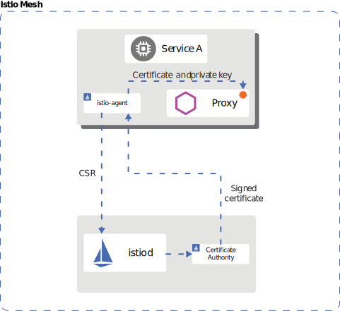

Istio Service Mesh¶
Service Mesh introduction
Istio Introduction¶
Monoliths vs Microservices¶
Pros of Microservices¶
- Scalability.
- Faster, smaller releases, and less risky.
- Technology and language agnostic Development lifecycle.
- System resiliency and isolation.
- Independent and easy to understand services.
Cons of Microservices¶
- Complex Service Networking
- Security
- Observability
-
Overload for Traditional Operation Models
-
Single proxy in the form of a sidecar container to replace all the different requirements into each microservice. The proxies communicate with each other through what is known as a data plane and they communicate to a server site component called control plane.
- Control plane manages all the traffic into and out of your services via proxies, so all the networking logic is abstracted from your business code. This approach is known as a Service Mesh.
Service Mesh¶
What is Service Mesh?¶
Service Mesh is a dedicated and configurable infrastructure layer that handles the communication between services without having to change the code in a microservice architecture.
What is Service Mesh Responsible For?¶
- With the Service Mesh, you can dynamically configure how services talk to each other.
- When services talk to one another, you'll have mutual TLS, so your workloads can be secure. You can see thing better. For example, how the application is doing end-to-end, where it is having issues and bottlenecks, and service discovery which covers three main topics:
- Discovery - you need to know at which IP and port services are exposed so they can find each other.
- Health Check - helps you dynamically keep services that are up in the mesh while services that are down are left out.
- Load Balancing - routes the traffic to healthy instances and cuts it off from the ones who have been failing.
Istio¶
- Istio is a free and open-source service mesh that provides an efficient way to secure, connect, and monitor services. Istio works with Kubernetes and traditional workloads, thereby bringing universal traffic management, telemetry and security to complex deployments.
- Istio is supported and implemented by leading cloud providers and consultants.
- Proxy service that takes care of all the tasks that should be outsourced from the microservice. These proxies and the communication between them form the data plane.
- Istio implements these proxies using an open-source, high-performance proxy known as Envoy.
- The proxies talk to a server side component known as the control plan.
- Originally, the control plane consisted of three components named Citadel, Pilot, and Galley.
- Citadel managed certificate generation.
- Pilot helped with service discovery.
- Galley helped in validating configuration file.
- The three components were later combined into a single daemon called Istiod. Each service or pod has a separate component in it along with the Envoy proxy called the Istio Agent.
- Istio Agent is responsible for passing configuration secrets to the Envoy proxies.
Installing Istioctl¶
Download the Istio latest binary and install it
The output is similar to this:
% Total % Received % Xferd Average Speed Time Time Time Current
Dload Upload Total Spent Left Speed
100 101 100 101 0 0 136 0 --:--:-- --:--:-- --:--:-- 137
100 4926 100 4926 0 0 4070 0 0:00:01 0:00:01 --:--:-- 4070
Downloading istio-1.14.1 from https://github.com/istio/istio/releases/download/1.14.1/istio-1.14.1-osx.tar.gz ...
Istio 1.14.1 Download Complete!
Istio has been successfully downloaded into the istio-1.14.1 folder on your system.
Next Steps:
See https://istio.io/latest/docs/setup/install/ to add Istio to your Kubernetes cluster.
To configure the istioctl client tool for your workstation,
add the /Users/vi/DevSecOps/demo/istio/istio-1.14.1/bin directory to your environment path variable with:
export PATH="$PATH:/Users/vi/DevSecOps/demo/istio/istio-1.14.1/bin"
Begin the Istio pre-installation check by running:
istioctl x precheck
Need more information? Visit https://istio.io/latest/docs/setup/install/
Move to the Istio directory, this directory is also named with the Istio version you downloaded
Add the istioctl client to our path
Check if istioctl is installed
The output is similar to this:
Check if our cluster has Istio installed
The output is similar to this:
0 Istio control planes detected, checking --revision "default" only
error while fetching revision : the server could not find the requested resource
0 Istio injectors detected
Error: could not load IstioOperator from cluster: the server could not find the requested resource. Use --filename
Installing Istio on your cluster¶
-
There are 3 different approaches to install Istio on cluster
-
Install with Istioctl
The output is similar to this:
✔ Istio core installed
✔ Istiod installed
✔ Egress gateways installed
✔ Ingress gateways installed
✔ Installation complete
Making this installation the default for injection and validation.
Thank you for installing Istio 1.14. Please take a few minutes to tell us about your install/upgrade experience! https://forms.gle/yEtCbt45FZ3VoDT5A
Check if our cluster has Istio installed
The output is similar to this:
1 Istio control planes detected, checking --revision "default" only
✔ Deployment: istio-egressgateway.istio-system checked successfully
✔ PodDisruptionBudget: istio-egressgateway.istio-system checked successfully
✔ Role: istio-egressgateway-sds.istio-system checked successfully
✔ RoleBinding: istio-egressgateway-sds.istio-system checked successfully
✔ Service: istio-egressgateway.istio-system checked successfully
✔ ServiceAccount: istio-egressgateway-service-account.istio-system checked successfully
✔ ClusterRole: istiod-istio-system.istio-system checked successfully
✔ ClusterRole: istio-reader-istio-system.istio-system checked successfully
✔ ClusterRoleBinding: istio-reader-istio-system.istio-system checked successfully
✔ ClusterRoleBinding: istiod-istio-system.istio-system checked successfully
✔ ServiceAccount: istio-reader-service-account.istio-system checked successfully
✔ Role: istiod-istio-system.istio-system checked successfully
✔ RoleBinding: istiod-istio-system.istio-system checked successfully
✔ ServiceAccount: istiod-service-account.istio-system checked successfully
✔ CustomResourceDefinition: wasmplugins.extensions.istio.io.istio-system checked successfully
✔ CustomResourceDefinition: destinationrules.networking.istio.io.istio-system checked successfully
✔ CustomResourceDefinition: envoyfilters.networking.istio.io.istio-system checked successfully
✔ CustomResourceDefinition: gateways.networking.istio.io.istio-system checked successfully
✔ CustomResourceDefinition: proxyconfigs.networking.istio.io.istio-system checked successfully
✔ CustomResourceDefinition: serviceentries.networking.istio.io.istio-system checked successfully
✔ CustomResourceDefinition: sidecars.networking.istio.io.istio-system checked successfully
✔ CustomResourceDefinition: virtualservices.networking.istio.io.istio-system checked successfully
✔ CustomResourceDefinition: workloadentries.networking.istio.io.istio-system checked successfully
✔ CustomResourceDefinition: workloadgroups.networking.istio.io.istio-system checked successfully
✔ CustomResourceDefinition: authorizationpolicies.security.istio.io.istio-system checked successfully
✔ CustomResourceDefinition: peerauthentications.security.istio.io.istio-system checked successfully
✔ CustomResourceDefinition: requestauthentications.security.istio.io.istio-system checked successfully
✔ CustomResourceDefinition: telemetries.telemetry.istio.io.istio-system checked successfully
✔ CustomResourceDefinition: istiooperators.install.istio.io.istio-system checked successfully
✔ ClusterRole: istiod-clusterrole-istio-system.istio-system checked successfully
✔ ClusterRole: istiod-gateway-controller-istio-system.istio-system checked successfully
✔ ClusterRoleBinding: istiod-clusterrole-istio-system.istio-system checked successfully
✔ ClusterRoleBinding: istiod-gateway-controller-istio-system.istio-system checked successfully
✔ ConfigMap: istio.istio-system checked successfully
✔ Deployment: istiod.istio-system checked successfully
✔ ConfigMap: istio-sidecar-injector.istio-system checked successfully
✔ MutatingWebhookConfiguration: istio-sidecar-injector.istio-system checked successfully
✔ PodDisruptionBudget: istiod.istio-system checked successfully
✔ ClusterRole: istio-reader-clusterrole-istio-system.istio-system checked successfully
✔ ClusterRoleBinding: istio-reader-clusterrole-istio-system.istio-system checked successfully
✔ Role: istiod.istio-system checked successfully
✔ RoleBinding: istiod.istio-system checked successfully
✔ Service: istiod.istio-system checked successfully
✔ ServiceAccount: istiod.istio-system checked successfully
✔ EnvoyFilter: stats-filter-1.11.istio-system checked successfully
✔ EnvoyFilter: tcp-stats-filter-1.11.istio-system checked successfully
✔ EnvoyFilter: stats-filter-1.12.istio-system checked successfully
✔ EnvoyFilter: tcp-stats-filter-1.12.istio-system checked successfully
✔ EnvoyFilter: stats-filter-1.13.istio-system checked successfully
✔ EnvoyFilter: tcp-stats-filter-1.13.istio-system checked successfully
✔ EnvoyFilter: stats-filter-1.14.istio-system checked successfully
✔ EnvoyFilter: tcp-stats-filter-1.14.istio-system checked successfully
✔ EnvoyFilter: stats-filter-1.15.istio-system checked successfully
✔ EnvoyFilter: tcp-stats-filter-1.15.istio-system checked successfully
✔ ValidatingWebhookConfiguration: istio-validator-istio-system.istio-system checked successfully
✔ Deployment: istio-ingressgateway.istio-system checked successfully
✔ PodDisruptionBudget: istio-ingressgateway.istio-system checked successfully
✔ Role: istio-ingressgateway-sds.istio-system checked successfully
✔ RoleBinding: istio-ingressgateway-sds.istio-system checked successfully
✔ Service: istio-ingressgateway.istio-system checked successfully
✔ ServiceAccount: istio-ingressgateway-service-account.istio-system checked successfully
Checked 15 custom resource definitions
Checked 3 Istio Deployments
✔ Istio is installed and verified successfully
- Istio Operator Install
-
Install with Helm
-
There are also different profiles for production and performance testing and it's important to know that different environments need different profiles.
- Once Istio is installed,
- it is deployed in the cluster in the form of a deployment named
istiodin the namespace known as theistio-system. - services
istio-ingressgatewayisitod- Citadel
- Pilot
- Galley
istio-egressgateway- and a bunch of Kubernetes service objects to expose these services within the cluster.
Deploying Your First Application on Istio¶
Deploy the sample booking deployment
The output is similar to this:
service/details created
serviceaccount/bookinfo-details created
deployment.apps/details-v1 created
service/ratings created
serviceaccount/bookinfo-ratings created
deployment.apps/ratings-v1 created
service/reviews created
serviceaccount/bookinfo-reviews created
deployment.apps/reviews-v1 created
deployment.apps/reviews-v2 created
deployment.apps/reviews-v3 created
service/productpage created
serviceaccount/bookinfo-productpage created
deployment.apps/productpage-v1 created
Check all the deployment
The output is similar to this:
NAME READY STATUS RESTARTS AGE
details-v1-7f4669bdd9-q72n9 1/1 Running 0 3m2s
productpage-v1-5586c4d4ff-lghxl 1/1 Running 0 3m
ratings-v1-6cf6bc7c85-sv8sf 1/1 Running 0 3m1s
reviews-v1-7598cc9867-gt8zn 1/1 Running 0 3m1s
reviews-v2-6bdd859457-thjrq 1/1 Running 0 3m1s
reviews-v3-6c98f9d7d7-z8qf6 1/1 Running 0 3m1s
We have the deployments in the default namespace but there are no proxies that we needs in each of deployment
To see why may be the case
The output is similar to this:
Info [IST0102] (Namespace default) The namespace is not enabled for Istio injection. Run 'kubectl label namespace default istio-injection=enabled' to enable it, or 'kubectl label namespace default istio-injection=disabled' to explicitly mark it as not needing injection.
Because the default namespace where our deployment deployed is not labeled with istio-injection=enable, so we need to delete all the deployment to label the namespace
The output is similar to this:
Check/analyze again
The output is similar to this:
Delete or restart rollout deployment
kubectl rollout restart deployments details-v1
kubectl rollout restart deployments productpage-v1
kubectl rollout restart deployments ratings-v1
kubectl rollout restart deployments reviews-v1
kubectl rollout restart deployments reviews-v2
kubectl rollout restart deployments reviews-v3
The output is similar to this:
deployment.apps/details-v1 restarted
deployment.apps/productpage-v1 restarted
deployment.apps/ratings-v1 restarted
deployment.apps/reviews-v1 restarted
deployment.apps/reviews-v2 restarted
deployment.apps/reviews-v3 restarted
Check all the deployment
```sh kubectl get pod
The output is similar to this:
```sh
NAME READY STATUS RESTARTS AGE
details-v1-7fd8c8d8c-kw8cx 2/2 Running 0 58s
productpage-v1-7444985f97-5hnt6 2/2 Running 0 57s
ratings-v1-5bd97d8566-qwmw8 2/2 Running 0 57s
reviews-v1-74cffbcd7d-x88hn 2/2 Running 0 57s
reviews-v2-6746555c8b-d4rrj 2/2 Running 0 56s
reviews-v3-85cb57875d-z6w5m 2/2 Running 0 56s
Visualizing Service Mesh with Kiali¶
- Once you have many microservices, it is important to observe them and check them to make sure they're available as you configured them.
- Kiali is a very common and powerful add-on used with Istio. It has a web-based graphical interface. It is a very helpful and fun tool for visualizing and managing service mesh. Kiali is used for observing connections and microservices of Istio service mesh and also for defining and validating them.
- It visualizes the service mesh topology and provides visibility into features like request routing, circuit breakers, request rates, latency and more. Kiali also offers Wizards to apply common traffic patterns and automatically generates Istio configuration.
Installing Kiali¶
Install Kiali and others add-on in the samples/addons folder (these addons are not tuned in performance and security purposes)
The output is similar to this:
README.md extras grafana.yaml jaeger.yaml kiali.yaml prometheus.yaml
serviceaccount/grafana created
configmap/grafana created
service/grafana created
deployment.apps/grafana created
configmap/istio-grafana-dashboards created
configmap/istio-services-grafana-dashboards created
deployment.apps/jaeger created
service/tracing created
service/zipkin created
service/jaeger-collector created
serviceaccount/kiali created
configmap/kiali created
clusterrole.rbac.authorization.k8s.io/kiali-viewer created
clusterrole.rbac.authorization.k8s.io/kiali created
clusterrolebinding.rbac.authorization.k8s.io/kiali created
role.rbac.authorization.k8s.io/kiali-controlplane created
rolebinding.rbac.authorization.k8s.io/kiali-controlplane created
service/kiali created
deployment.apps/kiali created
serviceaccount/prometheus created
configmap/prometheus created
clusterrole.rbac.authorization.k8s.io/prometheus created
clusterrolebinding.rbac.authorization.k8s.io/prometheus created
service/prometheus created
deployment.apps/prometheus created
Check if the Kiali service is running
The output is similar to this:
NAME TYPE CLUSTER-IP EXTERNAL-IP PORT(S) AGE
kiali ClusterIP 10.99.20.194 <none> 20001/TCP,9090/TCP 67m
Start Kiali dashboard
The output is similar to this:
Create traffic into your mesh¶
- Gateway will configure our service mesh to accept traffic from outside the cluster.
Create a Gateway and its virtual service
The output is similar to this:
gateway.networking.istio.io/bookinfo-gateway created
virtualservice.networking.istio.io/bookinfo created
Check/analyze again
The output is similar to this:
Check the reachable IP of minikube - this is the minukube node Internal-IP
The output is similar to this:
NAME STATUS ROLES AGE VERSION INTERNAL-IP EXTERNAL-IP OS-IMAGE KERNEL-VERSION CONTAINER-RUNTIME
minikube Ready control-plane,master 31m v1.23.1 192.168.49.2 <none> Ubuntu 20.04.2 LTS 5.10.76-linuxkit docker://20.10.12
Export this IP to our variable
Export the istio-ingressgateway (http2) port to our variable
export INGRESS_PORT=$(kubectl -n istio-system get svc istio-ingressgateway -o jsonpath='{.spec.ports[?(@.name=="http2")].nodePort}')
Create some traffic to our mesh
while sleep 0.01;do curl -sS 'http://'"$INGRESS_HOST"':'"$INGRESS_PORT"'/productpage'\ &> /dev/null ; done
Traffic Management¶
The most powerful port of it is that you'll do it without changing your application code
Gateways¶
- How can we make these services accessible to external users?
- While Istio supports Kubernetes Ingress there is also another approach that Istio offers and recommends that supports more Istio features, such as advanced monitoring and routing rules. That is called Istio Gateway.
- Gateways are load balancers that sit at the edge of the mesh. They are the main configurations that manage the inbound and the outbound traffic to service mesh. This is a recommended approach such as compared to just using Kubernetes Ingress.
- There are Istio gateway controllers just like the Ingress Controller:
- The Ingress Gateway manages all inbound traffic to the services.
- The Egress Gateway manages all outbound traffic from these services.
- Ingress is deployed in Kubernetes using controllers like NGINX. Istio on the other hand, deploys Ingress Gateways using Envoy proxies. And all services have an Envoy proxy deployed as a sidecar container, however, the Ingress and Egress Gateways are just standalone Envoy proxies, sitting at the edge of the service mesh, they do not work as as sidecar. These are the default gateway controllers that were deployed when Istio was deployed on the cluster. However, we can have our own set of custom gateway controllers as well.
-
Our goal here is to catch all traffic coming through
istio-ingressgatewaycontroller and route all traffic at hostname bookinfo.app to our product page. -
First, we create a gateway object
cat <<EOF | kubectl apply -f -
apiVersion: networking.istio.io/v1alpha3
kind: Gateway
metadata:
name: bookinfo-gateway
spec:
selector:
istio: ingressgateway # use istio default controller
servers:
- port:
number: 80
name: http
protocol: HTTP
hosts:
- "bookinfo.app"
EOF
View the gateway
The output is similar to this:
Describe more details the gateway
The output is similar to this:
Name: bookinfo-gateway
Namespace: default
Labels: <none>
Annotations: <none>
API Version: networking.istio.io/v1beta1
Kind: Gateway
Metadata:
Creation Timestamp: 2022-07-07T02:24:05Z
Generation: 1
Managed Fields:
API Version: networking.istio.io/v1alpha3
Fields Type: FieldsV1
fieldsV1:
f:metadata:
f:annotations:
.:
f:kubectl.kubernetes.io/last-applied-configuration:
f:spec:
.:
f:selector:
.:
f:istio:
f:servers:
Manager: kubectl-client-side-apply
Operation: Update
Time: 2022-07-07T02:24:05Z
Resource Version: 1237
UID: 40b636a4-88ea-4cd9-9294-accd8ce38bfa
Spec:
Selector:
Istio: ingressgateway
Servers:
Hosts:
bookinfo.app
Port:
Name: http
Number: 80
Protocol: HTTP
Events: <none>
- We now have a
bookinfo-gatewayobject created to capture traffic coming through the defaultistio-ingressgatewaycontroller, through the URL bookinfo.app.
Virtual Services¶
-
How and where is that traffic routed to?
-
All routing rules are configured through virtual services.
- Virtual services define a set of routing rules for traffic coming from ingress gateway into the service mesh.
- Virtual services are flexible and powerful with rich traffic routing options. You can specify traffic behavior for one or more hostname, manage traffic within different versions of a service. Standard and regex path are supported.
- When a virtual service is created, Istio control plane applies the new configuration to all the Envoy sidecar proxies.
Create a virtual service for product page:
cat <<EOF | kubectl apply -f -
apiVersion: networking.istio.io/v1alpha3
kind: VirtualService
metadata:
name: bookinfo
spec:
hosts:
- "bookinfo.app"
gateways:
- bookinfo-gateway
http:
- match:
- uri:
exact: /productpage
- uri:
prefix: /static
- uri:
exact: /login
- uri:
exact: /logout
- uri:
prefix: /api/v1/products
route:
- destination:
host: productpage
port:
number: 9080
EOF
- All traffic coming in through the
bookinfo-gatewaywith the hostnamebookinfo.appnow hit thebookinfovirtual service. Next, the product page needs to talk to the review service. Since the Kubernetes service distributes traffic across all of endpoints equally, the distribution can only be 75 and 25 percentage not anything else. The only way to change the distribution percentage is to play around with the number of pods available in different services, so that's a limitation. - With Istio and virtual services, we can now create a virtual service instead of a service, and we will call it
reviews, we then define two destination routes for traffic distribution subset v1 and v2, then we set a weight for each.
cat <<EOF | kubectl apply -f -
apiVersion: networking.istio.io/v1alpha3
kind: VirtualService
metadata:
name: reviews
spec:
hosts:
- reviews
http:
- route:
- destination:
host: reviews
subset: v1
weight: 99 # route 99% of the traffic to v1
- destination:
host: reviews
subset: v2
weight: 1 # route 1% of the traffic to v2
EOF
Destination Rules¶
- Destination rule applies router polices after the traffic is routed to a specific service.
-
Where and how are these subsets defined?
-
Subsets are defined in destination rules. So, we create a destination rule with the kind set to DestinationRule, name set to reviews-destination, and host set to reviews.
cat <<EOF | kubectl apply -f -
apiVersion: networking.istio.io/v1alpha3
kind: DestinationRule
metadata:
name: reviews-destination
spec:
host: reviews
subsets:
- name: v1
labels:
version: v1
- name: v2
labels:
version: v2
EOF
- By default, Envoy load balances traffic in a round-robin fashion. This can be customized through the destination rule by specifying a traffic policy of load balancer.
cat <<EOF | kubectl apply -f -
apiVersion: networking.istio.io/v1alpha3
kind: DestinationRule
metadata:
name: reviews-destination
spec:
host: reviews
trafficPolicy:
loadBalancer:
simple: PASSTHROUGH # This will route traffic to the host that has fewer active requests.
subsets:
- name: v1
labels:
version: v1
- name: v2
labels:
version: v2
EOF
- Set the traffic policy to a simple passthrough policy. This will route traffic to the host that has fewer active requests. There are other simple algorithms:
| Simple Algorithms |
|---|
| ROUND_ROBIN |
| LEAST_CONN |
| RANDOM |
| PASSTHROUGH |
- What if we want to override a different load balancer policy for specific subsets? For example, for subset v2, we would like to have a random load balancer policy. For this, we'll just specify a traffic policy at the subset level and configure a different policy. This way, we can configure one load balancing policy for all subsets and a seperate one for selected subsets as required.
cat <<EOF | kubectl apply -f -
apiVersion: networking.istio.io/v1alpha3
kind: DestinationRule
metadata:
name: reviews-destination
spec:
host: reviews
trafficPolicy:
loadBalancer:
simple: PASSTHROUGH
subsets:
- name: v1
labels:
version: v1
- name: v2
labels:
version: v2
trafficPolicy:
loadBalancer:
simple: RANDOM
EOF
- There are many more configurations supported by destination rules. For example, to configure a client to use TLS, specify simple TLS, or to configure mutual TLS
cat <<EOF | kubectl apply -f -
apiVersion: networking.istio.io/v1alpha3
kind: DestinationRule
metadata:
name: reviews-destination
spec:
host: reviews
trafficPolicy:
tls:
mode: SIMPLE # use simple TLS
EOF
cat <<EOF | kubectl apply -f -
apiVersion: networking.istio.io/v1alpha3
kind: DestinationRule
metadata:
name: reviews-destination
spec:
host: reviews
trafficPolicy:
tls:
mode: MUTUAL # configure mutual TLS with certificate files
clientCertificate: /myclientcert.pem
privateKey: /client_private_key.pem
caCertificate: /rootcacerts.pem
EOF
spec.hostfield it is currently set toreviews, which is the name of the service. It is the short name of the service. When using short names, instead of fully qualified domain namesreviews.default.svc.cluster.local, Istio will interpret the short name based on the rules namespace and not the services actual namespaces. This might lead to misconfigurations if your service is another namespace. To avoid this, using fully qualified names over short names is recommended.
cat <<EOF | kubectl apply -f -
apiVersion: networking.istio.io/v1alpha3
kind: DestinationRule
metadata:
name: reviews-destination
spec:
host: reviews.default.svc.cluster.local # recommend to use FQDN instead of short name
trafficPolicy:
tls:
mode: MUTUAL
clientCertificate: /myclientcert.pem
privateKey: /client_private_key.pem
caCertificate: /rootcacerts.pem
EOF
Fault Injection¶
- We will generate some errors to check if error handling mechanisms are working as expected. That is fault injection. This is a testing approach. It helps us to see if our policies run efficiently and are not too restrictive.
- We can inject errors in our virtual services and these could be two different types of errors, delays and aborts.
cat <<EOF | kubectl apply -f -
apiVersion: networking.istio.io/v1alpha3
kind: VirtualService
metadata:
name: my-service
spec:
hosts:
- my-service
http:
- fault:
delay: # injecting a delay type of fault in the mesh for ratings virtual service
percentage:
value: 0.1 # add a delay for 10% of requests
fixedDelay: 5s # this delay is configured as 5 seconds
route:
- destination:
host: my-service
subset: v1
EOF
Apart from delay, you can also configure abort to simulate errors by rejecting requests and returning specific error codes.
cat <<EOF | kubectl apply -f -
apiVersion: networking.istio.io/v1alpha3
kind: VirtualService
metadata:
name: my-service
spec:
hosts:
- my-service
http:
- fault:
abort:
percentage:
value: 0.1
httpStatus: 400
route:
- destination:
host: my-service
subset: v1
EOF
Timeouts¶
- When it comes to software, you must know that anything could happen. Since each service within this microservice architecture is a software, we should expect them to slow down, fail, or go completely crazy for no obvious reasons. And since the services are dependent on each other, slowness on one service might affect the other services dependent on it and even have a cascading effect.
- For example:
- If the ratings service slows down for some reason, we will have requests queued at it, which is going to cause requests on the reviews service to be queued up, which is going to cause the requests on productpage to be queued up.
- The details service slows down, then the requests coming from product page to details service is going to get queued up, and the request sub-productpage is going to get queued up affecting all users accessing the application. That's why we need timeouts.
- If the service is taking too much time to response, it must not keep the dependent service waiting forever. It must fail after a period of time and return an error message. That way the dependent service gets an error message and is not impacted. That's what a timeout is.
- We can either configure a timeout at the details service for it to fail, or we can configure a timeout at the productpage service for it to fail sooner rather than waiting for the details service for eternity.
cat <<EOF | kubectl apply -f -
apiVersion: networking.istio.io/v1alpha3
kind: VirtualService
metadata:
name: bookinfo
spec:
hosts:
- "*"
gateways:
- bookinfo-gateway
http:
- match:
- uri:
exact: /productpage
- uri:
prefix: /static
- uri:
exact: /login
- uri:
exact: /logout
- uri:
prefix: /api/v1/products
route:
- destination:
host: productpage
port:
number: 9080
timeout: 3s # reject requests if it takes more than 3 seconds
EOF
Simulate the fault injection to set 50% of request to details service to be delayed 5 seconds
cat <<EOF | kubectl apply -f -
apiVersion: networking.istio.io/v1alpha3
kind: VirtualService
metadata:
name: details
spec:
hosts:
- details
http:
- fault:
delay:
percentage:
value: 50.0
fixedDelay: 5s
route:
- destination:
host: details
subset: v1
EOF
Retries¶
- When a service tries to reach another service, and for some reason, it fails, we can configure the virtual service to attempt that operation again. This way, you don't have to handle the retries within the application code. You can configure retry settings, which basically says
cat <<EOF | kubectl apply -f -
apiVersion: networking.istio.io/v1alpha3
kind: VirtualService
metadata:
name: my-service
spec:
hosts:
- my-service
http:
- route:
- destination:
host: my-service
subset: v1
retries:
attempts: 3 # number of times to try
perTryTimeout: 2s # interval between each try
EOF
NOTE: Istio, by default, has a retry behavior which is 25 milliseconds between retries and retrying 2 times before an error returns.
Circuit Breaking¶
- The productpage service communicates with other services such as the reviews or the details service. If, for some reason, the details service breaks or slows down and is unable to serve the product service, all requests from the productpage service will pile up at the detail service, essentially creating a delay as the productpage service is waiting for response from the detail service. In such cases, we would like to mark the requests failed immediately as it is sent to the details service. This is known as circuit breaking. This allows us to create resilient microservice applications that will limit the impact of failures or other network-related issues. The same is true if we would like to limit the number of request coming to the productpage itself.
- Circuit breakers are configured in destination rules.
cat <<EOF | kubectl apply -f -
apiVersion: networking.istio.io/v1alpha3
kind: DestinationRule
metadata:
name: productpage
spec:
host: productpage
trafficPolicy:
tls:
mode: ISTIO_MUTUAL
subsets:
- name: v1
labels:
version: v1
trafficPolicy:
connectionPool:
tcp:
maxConnections: 3 # limit the number of concurrent connections to 3
http:
http1MaxPendingRequests: 3
maxRequestsPerConnection: 3
EOF
Create concurrent requests
The output is similar to this:
starting benchmark...
spawning thread #0: 3 total client(s). 10 total requests
Application protocol: h2c
progress: 10% done
progress: 20% done
progress: 30% done
progress: 40% done
progress: 50% done
progress: 60% done
progress: 70% done
progress: 80% done
progress: 90% done
progress: 100% done
finished in 9.65s, 1.04 req/s, 1.40KB/s
requests: 10 total, 10 started, 10 done, 3 succeeded, 7 failed, 0 errored, 0 timeout
status codes: 3 2xx, 0 3xx, 0 4xx, 7 5xx
traffic: 13.55KB (13876) total, 454B (454) headers (space savings 59.61%), 12.74KB (13050) data
min max mean sd +/- sd
time for request: 323.12ms 3.18s 2.27s 1.32s 70.00%
time for connect: 45.68ms 46.04ms 45.83ms 187us 66.67%
time to 1st byte: 3.09s 3.10s 3.09s 685us 66.67%
req/s : 0.41 0.46 0.44 0.02 66.67%
A/B Testing¶
- A/B Testing is a very popular and powerful approach to understand user behavior. It boosts experimentation and helps our software professionals to not guess how our applications will be interacted, but to see it on real data.
- Istio allows to weight the traffic to several services via virtual service even if the reviews v2 service had 3 or more pods, the traffic distribution will still be 99% to v1 and 1% to v2. The number of instances now has nothing to do with the traffic distribution, and we can easily control that through the virtual service configuration.
Security¶
Security in Istio¶
- Microservices have certain security requirements. When a service communicates with other service, it's possible for an attacker to intercept the traffic and modify it before the request reaches the destination. This is known as man-in-the-middle attack.
- To prevent this from happening:
- First, the traffic between services needs to be encrypted.
- Secondly, certain services may need to implement access control restrictions. For example, only the productpage service is allowed to access the reviews service and not the details service or any other services in the cluster. For this, we need access control. Istio allows this using mutual TLS and fine-grained access policies.
- Finally, we'd like to know who did what at what time. And for this, Istio provides support for audits logs.
Istio Security Architecture¶
- Now take a look at the Istio architecture and see how Istio implements security to achieve the requirements of microservices applications.

- Control plane
- Istiod
- There is a certification authority that manages keys and certificates in Istio. This is where the certificates are validated and certificate signing requests are approved. Every time a workload is started, the Envoy proxies request the certificate and key from the Istio agent and that helps secure communication between services.
- The configuration API server component distributes all the authentication, authorization, and secure naming policies to the proxies.
- Data plane
- Sidecar and ingress/egress proxies work as Policy Enforcement Points. The certificate, keys, authentications, authorization, and secure naming policies are sent to these proxies at all times. This means every point has security checks, not just the entry point to the network, and this is called security at depth.
Authentication¶
- In service-oriented architecture, we need to make sure that communication between two services are authenticated.Meaning, when a service tries to communicate with another service, there should be a way to confirm they're really who they say they are. This is done by hardening traffic using verification options like mutual TLS and JSON Web Token validation.
- For example, when the productpage service tries to reach the reviews service, the reviews services needs to know that the request is actually coming from the productpage service and not from an external source who pretends to be the productpage service, so the traffic between one service to the other needs to be verified.
- With mTLS, each service gets its own identity Peer Authentication, which is enforced using certificate key pairs. This certificate generation and distribution are all managed automatically by
istiod. So there's nothing extra that you have to do on the services. - Another area to be authenticated is the end users' access to services. For this, Istio supports Request Authentication using JSON Web Token validation or OpenID Connect providers some of which are:
- ORY Hydra
- Keycloak
- Firebase
- Example for Peer Authentication config, this policy in the book-info namespace and only be effective on workloads labeled with the key app and value set to reviews, and say that these workloads must strictly use Mutual TLS. In this case, we have enabled authentication only for the reviews app, and so we have only enabled it for a single workload. This is a workload-specific policy.
cat <<EOF | kubectl apply -f -
apiVersion: security.istio.io/v1beta1
kind: PeerAuthentication
metadata:
name: peer-policy
namespace: book-info
spec:
selector:
matchLabels:
app: reviews # only effective on workload with this label
mtls:
mode: STRICT # strictly use Mutual TLS
EOF
- If you remove the selector specification, the policy will be enabled for the entire namespace, so then this would be a namespace-wide policy that is applied to all workloads within the book-info namespace
cat <<EOF | kubectl apply -f -
apiVersion: security.istio.io/v1beta1
kind: PeerAuthentication
metadata:
name: peer-policy
namespace: book-info
spec:
mtls:
mode: STRICT # strictly use Mutual TLS for entire namespace
EOF
- If we set the namespace to the root namespace
istio-systemso then this become a mesh-wide policy that is applicable to the entire mesh.
cat <<EOF | kubectl apply -f -
apiVersion: security.istio.io/v1beta1
kind: PeerAuthentication
metadata:
name: peer-policy
namespace: isito-system # this is the mesh-wide policy
spec:
mtls:
mode: STRICT
EOF
- If your namespace is not injection enabled, you still can manual inject Istio proxy sidecars to deployment, but manual injection will change the deployment configuration by adding proxy configuration into it. So it works a little differently.
# Update resources on the fly before applying.
kubectl apply -f <(istioctl kube-inject -f <resource.yaml>)
# Create a persistent version of the deployment with Istio sidecar injected.
istioctl kube-inject -f deployment.yaml -o deployment-injected.yaml
# Update an existing deployment.
kubectl get deployment -o yaml | istioctl kube-inject -f - | kubectl apply -f -
Demo Peer Authentication, workloads that do not apply the same mode cannot reach our application.
Create new namespace bar
The output is similar to this:
Manual inject Istio proxy sidecars into HTTPbin deployment and deploy
The output is similar to this:
Curl from HTTPbin to the productpage
kubectl exec -it "$(kubectl get pod -l app=httpbin -n bar -o jsonpath={.items..metadata.name})" -c istio-proxy -n bar -- curl "http://productpage.default:9080" -s -o /dev/null -w "%{http_code}\n"
The output is similar to this:
Apply the Peer Authentication for default namespace mTLS mode strict
cat <<EOF | kubectl apply -f -
apiVersion: security.istio.io/v1beta1
kind: PeerAuthentication
metadata:
name: peer-policy
namespace: default
spec:
mtls:
mode: STRICT
EOF
The output is similar to this:
Curl from HTTPbin to the productpage again
kubectl exec -it "$(kubectl get pod -l app=httpbin -n bar -o jsonpath={.items..metadata.name})" -c istio-proxy -n bar -- curl "http://productpage.default:9080" -s -o /dev/null -w "%{http_code}\n"
The output is similar to this:
Authorization¶
- Authorization in Istio provides a flexible approach to access control for inbound traffic. We can control which service can reach which service, which is referred to as east-west traffic using authorization configuration.
- With authentication policies, we now have the end-user traffic as well as service-to-service traffic secured. What about access control? For example, we would like to only allow the productpage service to access the reviews service and not the details or any other services. Also, the productpage service is only supposed to run GET calls to reviews service and not POST or UPDATE calls. We do not want anyone gaining access to the productpage service to make POST calls to the reviews service in an attempt to update or change reviews. And for this purpose, Istio provides authorization mechanisms that allow us to define policies to allow or deny requests based on certain criteria.
- These services don't require any changes to implement authorization. This is implemented by Envoy proxies authorization engine in runtime. When a request comes through the proxy, the authorization engine evaluates the request context against the current authorization policies and returns the authorization result either allow or deny. There are 4 actions that authorization policies support, CUSTOM, DENY, ALLOW, and AUDIT:
- ALLOW action allows a request to go through.
- DENY action denies a request from going through.
- CUSTION action allows an extension to handle the request.
- AUDIT action - Authorization policies can also be configured to audit requests. With this option, when a request hits the matching rule, it gets audited.
- Example of an authorization policy:
cat <<EOF | kubectl apply -f -
apiVersion: security.istio.io/v1beta1
kind: AuthorizationPolicy
metadata:
name: authdenypolicy
namespace: bookinfo
spec:
action: DENY # this policy deines all POST requests from the bar namespace to the bookinfo namespace
rules:
- from:
- source:
namespace: ["bar"]
to:
- operation:
methods: ["POST"]
EOF
Certificate Management¶

This is a diagram of key and certification flow in Istio, so when a service is started, it needs to identify itself to the mesh control plane and retrieve a certificate in order to serve traffic. Istio only has a built-in certificate authority.
- The
Istio agentin a service creates a private key and a certificate signing request, and then sends the certificate signing request with its credentials toistiodfor signing. - The CA in
istiodvalidates the credentials carried in the CSR. Upon successful validation, it signs the CSR to generate the certificate. - The
Istio agentsends the certificates received fromistiodand the private key to Envoy proxy Istio agentmonitors the expiration of the workload certificate.
The above process repeats periodically for certificates and key rotation.
It is important to note that for production-grade clusters, you should use a production-ready CA such as HashiCorp Vault and put your certificates in an oven machine or the fridge.
Create our own root certificate
cd ~/DevSecOps/demo/istio/istio-1.14.1
mkdir ca-certs
cd ca-certs
make -f ../tools/certs/Makefile.selfsigned.mk root-ca
The output is similar to this:
generating root-key.pem
Generating RSA private key, 4096 bit long modulus
.................++
...................................................................................................................................................................................................................++
e is 65537 (0x10001)
generating root-cert.csr
generating root-cert.pem
Signature ok
subject=/O=Istio/CN=Root CA
Getting Private key
Here are 4 files that are generated with above command
The output is similar to this:
root-ca.confis the configuration for OpenSSL to generate the root certificate.root-cert.csris a generated CSR for the root certificate.root-cert.pemis a generated root certificate.root-key.pemis a generated root key.
Now we will create our immediate certificates.
The output is similar to this:
generating localcluster/ca-key.pem
Generating RSA private key, 4096 bit long modulus
........................................................................................................................................................................................................................................................................................................................++
.++
e is 65537 (0x10001)
generating localcluster/cluster-ca.csr
generating localcluster/ca-cert.pem
Signature ok
subject=/O=Istio/CN=Intermediate CA/L=localcluster
Getting CA Private Key
generating localcluster/cert-chain.pem
Intermediate inputs stored in localcluster/
done
rm localcluster/cluster-ca.csr localcluster/intermediate.conf
Root certificates should not be used directly, because it is very dangerous, and also not very practical to use them. Above they are also created
The output is similar to this:
Important: you need to delete if you pre-installed Istio, or at least delete the istio-system namespace to configure Istio to use our certificate.
The output is similar to this:
Then you can as well start with a fresh cluster
The output is similar to this:
namespace ? [default]
using NAMESPACE=default
destinationrule.networking.istio.io "details" deleted
destinationrule.networking.istio.io "productpage" deleted
destinationrule.networking.istio.io "ratings" deleted
destinationrule.networking.istio.io "reviews" deleted
virtualservice.networking.istio.io "bookinfo" deleted
gateway.networking.istio.io "bookinfo-gateway" deleted
Application cleanup may take up to one minute
service "details" deleted
serviceaccount "bookinfo-details" deleted
deployment.apps "details-v1" deleted
service "ratings" deleted
serviceaccount "bookinfo-ratings" deleted
deployment.apps "ratings-v1" deleted
service "reviews" deleted
serviceaccount "bookinfo-reviews" deleted
deployment.apps "reviews-v1" deleted
deployment.apps "reviews-v2" deleted
deployment.apps "reviews-v3" deleted
service "productpage" deleted
serviceaccount "bookinfo-productpage" deleted
deployment.apps "productpage-v1" deleted
Application cleanup successful
Now let's create istio-system namespace again
The output is similar to this:
Then create a secret to include all these certificates
cd ca-certs/localcluster/
kubectl create secret generic cacerts -n istio-system \
--from-file=ca-cert.pem \
--from-file=ca-key.pem \
--from-file=root-cert.pem \
--from-file=cert-chain.pem
The output is similar to this:
Here, we'll install Istio back again, so that Istio certificate authority will read the certificates and key from the secret mount files.
The output is similar to this:
We can also get our Kiali, Grafana, Prometheus all back
The output is similar to this:
serviceaccount/grafana created
configmap/grafana created
service/grafana created
deployment.apps/grafana created
configmap/istio-grafana-dashboards created
configmap/istio-services-grafana-dashboards created
deployment.apps/jaeger created
service/tracing created
service/zipkin created
service/jaeger-collector created
serviceaccount/kiali created
configmap/kiali created
clusterrole.rbac.authorization.k8s.io/kiali-viewer created
clusterrole.rbac.authorization.k8s.io/kiali created
clusterrolebinding.rbac.authorization.k8s.io/kiali created
role.rbac.authorization.k8s.io/kiali-controlplane created
rolebinding.rbac.authorization.k8s.io/kiali-controlplane created
service/kiali created
deployment.apps/kiali created
serviceaccount/prometheus created
configmap/prometheus created
clusterrole.rbac.authorization.k8s.io/prometheus created
clusterrolebinding.rbac.authorization.k8s.io/prometheus created
service/prometheus created
deployment.apps/prometheus created
Deploy the sample booking deployment
The output is similar to this:
service/details created
serviceaccount/bookinfo-details created
deployment.apps/details-v1 created
service/ratings created
serviceaccount/bookinfo-ratings created
deployment.apps/ratings-v1 created
service/reviews created
serviceaccount/bookinfo-reviews created
deployment.apps/reviews-v1 created
deployment.apps/reviews-v2 created
deployment.apps/reviews-v3 created
service/productpage created
serviceaccount/bookinfo-productpage created
deployment.apps/productpage-v1 created
Create a Gateway and its virtual service
The output is similar to this:
gateway.networking.istio.io/bookinfo-gateway created
virtualservice.networking.istio.io/bookinfo created
Create destination rules
The output is similar to this:
destinationrule.networking.istio.io/productpage created
destinationrule.networking.istio.io/reviews created
destinationrule.networking.istio.io/ratings created
destinationrule.networking.istio.io/details created
Check/analyze Istio
The output is similar to this:
Now, let's deploy a policy for our workloads to only accept mTLS traffic, strict mode here identifies that.
cat <<EOF | kubectl apply -f -
apiVersion: security.istio.io/v1beta1
kind: PeerAuthentication
metadata:
name: default
spec:
mtls:
mode: STRICT
EOF
The output is similar to this:
Now, we will check if the workloads are signed with the exact same certificate that we just plugged in. When we're trying to connect the productpage
kubectl exec "$(kubectl get pod -l app=details -o jsonpath={.items..metadata.name})" -c istio-proxy -- openssl s_client -showcerts -connect productpage:9080 > httpbin-proxy-cert.txt
The output is similar to this:
depth=2 O = Istio, CN = Root CA
verify error:num=19:self signed certificate in certificate chain
DONE
As the CA certificate used in this example is self-signed, the verify error:num=19:self signed certificate in certificate chain error returned by the openssl command is expected
Now, here in the TXT file we have the certificates and we'll clear the rest of the certificate details with the sed command.
sed -ne '/-----BEIN CERTIFICATE-----/,/-----END CERTIFICATE-----/p' httpbin-proxy-cert.txt | sed 's/^\s*//' > certs.pem
Let's check the certs.pem to see the certificates extracted from the traffic between 2 services.
Now, with split, we can split these into 4 different files.
Now, we will verify if the root certificate is the same as the one we specified.
The second command will dump certificate information of the one we just extracted from the traffic itself.
Let's check if these match
The output is similar to this:
Same to verify the CA certificate is the same
openssl x509 -in ca-certs/localcluster/ca-cert.pem -text -noout > /tmp/ca-cert.crt.txt
openssl x509 -in ./proxy-cert-2.pem -text -noout > /tmp/pod-cert-chain-ca.crt.txt
diff -s /tmp/ca-cert.crt.txt /tmp/pod-cert-chain-ca.crt.txt
The output is similar to this:
Let's also verify the certificate chain from the root certificate to the workload certificate.
openssl verify -CAfile <(cat ca-certs/localcluster/ca-cert.pem ca-certs/localcluster/root-cert.pem) ./proxy-cert-1.pem
The output is similar to this:
Observability¶
How to collect and customize telemetry information from our mesh. Istio has advantage in terms of observability because all of the traffic is handled by Envoy proxies in the data plane. Your service mesh will generate very detailed telemetry information for all service comminications with Istio. Without having to develop a solution you can have observability of services to troubleshoot and optimize the applications.
- Visualizing Metrics with Prometheus and Grafana
- Distributed Tracing with Jaeger
- Kiali in Detail
Visualizing Metrics with Prometheus and Grafana¶
The standard Istio metrics are exported to Prometheus by default. Prometheus is a modern monitoring tool to gather metrics for distributed architechtures and it is used by many applications and the underlying tools to collect and store metrics. By integrating your service mesh data, you will have a nice unified approach to monitoring metrics. Then, as an Istio addon your metrics can be monitored in Grafana, which is an open-source visualization and analytics tool.
Demo the Prometheus dashboard and explore some metrics.
Open the Prometheus dashboard
Prometheus is not intended for graphical representation of metrics data. Grafana can be used for that. And here we have the Alerts, Graph, and Status tab
istio_requests_totalmetric holds the total number of requests that are coming.istio_requests_total{destination_service="productpage.default.svc.cluster.local"}
Open the Grafana dashboard
In Grafana, you can see Search, Create, Dashboard, Explore, Alerting, and Configuration Menu
Distributed Tracing with Jaeger¶
A way to monitor and understand behavior of services, is to monitor individual requests as a flow through a mesh, which is called distributed tracing. Service dependencies and the sources of latency within the service mesh can be observed by tracing. Istio enables distributed tracing through Envoy proxies and supports Zipkin, Lightstep, Jaeger and Datadog.
Demo Distriuted Tracing with Jaeger
Open the Jaeger dashboard
In Jaeger, we can filter services by name, by operation name, by some tags and traces, by duration of traces, and the number of results.
Kiali in more detail¶
-
Overview
-
Overview gives us a summary of our mesh, the workloads, and the services. And all these can be broken down by:
- Health
- mTLS status
- Namespace Label
-
We can also get the Health information for:
- Apps
- Workloads
- Services
-
Graph
-
Graph will have a very informative and clear visualization of the traffic between our services. The Graph has different versions:
- App graph
- Service graph
- Versioned app graph
- Worklaod graph
-
These versions provide different focus views on our app by grouping accordingly.
- The left bottom part hels us modify the graph view
- On the Display, we can add more information and formating from our data plane to the graph.
A QUICK NOTE ON SERVICE MESH INTERFACE¶
While Service Mesh technologies are getting more and more polular, Service Mesh vendors keep providing new features. This is both exciting and scary at the same time because while application developers enjoy using these features, they may be locked into a vendor-specific implementation. So in 2019, Microsoft has announced their onging work on Service Mesh Interface. The main goal was to create an abstraction layer on various types of service meshes implementations, which will create a standard interface, a basic feature set, and community to drive innovation effort on Service Mesh technologies. So developers will not spend a lot of time trying to understand different features that a service mesh offers using this set of functionality, and they will be able to jump in and start using any product. 10 Service Mesh providers so far have implemented the common standards, Istio being on of them. You can find a total list of providers in SMI SPEC in smi-spec.io. So the Service Mesh Interface will be covering traffic policy, traffic telemetry, and traffic management topics while also providing portability and flexibility. SMI APIs are expected to mature over time and the current capabilities will definitely extend.